Human World
human_world_solitary_region
Item Memory used 1
Creatures score 826
0 01_acid_slime 100% 0x20 score 155 80% item_47_cap 100% item_11e_anti_venom
31 exit-door Skeleton -> human_world_hidden_region pos( -3 ,0 ,-3)
34 exit-door Cemetery -> human_world_hidden_region pos( 0 ,0 ,0)
35 exit-door Grave -> human_world_cursed_region pos( 0 ,0 ,0)
38 exit-door Church -> shadow_tower_part1 pos( 5 ,3 ,5)
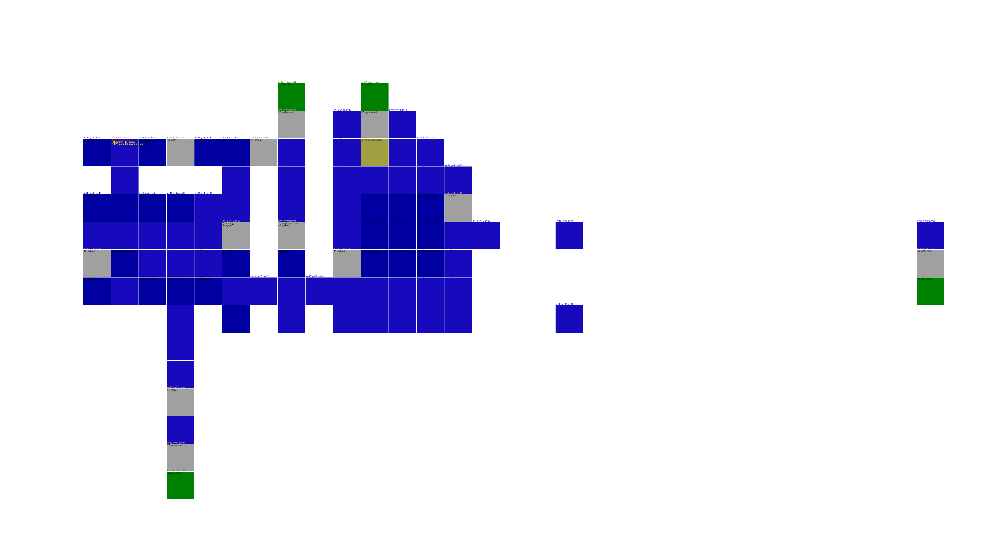
human_world_hidden_region
Item Memory used 14
Creatures score 160
0 00_acid_slime 100% 0x50 score 155 30% item_11e_anti_venom
1 00_acid_slime 50% 0x50 score 155 60% item_99_leg_guard
2 00_acid_slime 100% 0x20 score 155 30% item_11e_anti_venom
3 01_blood_slime 50% 0x20 score 191 100% item_10a_cune
4 06_fanged_worm 100% 0x50 score 217 10% item_f_broad_sword 100% item_9_rapier
5 04_acid_slime 100% 0x20 score 155
6 05_blood_slime 100% 0x20 score 191 100% item_11c_healing_potion
7 04_acid_slime 100% 0x20 score 155 30% item_11e_anti_venom
8 04_acid_slime 100% 0x20 score 155 100% item_11e_anti_venom
9 04_acid_slime 100% 0x20 score 155
a 04_acid_slime 25% 0x20 score 155 100% item_11e_anti_venom
b 05_blood_slime 25% 0x20 score 191 10% item_5_long_sword
c 08_casket 100% 0x50 score 477 40% item_2_deadly_short_sword 50% item_3_long_sword 100% item_10c_torch
d 08_casket 100% 0x50 score 477 100% item_10c_torch
e 09_blood_slime 100% 0x20 score 191 100% item_124_poison_vaccine
f 09_blood_slime 100% 0x20 score 191 100% item_10a_cune
10 09_blood_slime 25% 0x20 score 191 20% item_60_scale_mail 50% item_5e_leather_armor
11 09_blood_slime 25% 0x20 score 191 100% item_124_poison_vaccine
20 02_parasite 100% 0x50 score 143 100% item_12e_dorados_ashes
9 exit-door Jail -> human_world_solitary_region pos( 4 ,0 ,4)
13 exit-door Corridor -> human_world_solitary_region pos( 7 ,0 ,7)
26 exit-totem Totem -> shadow_tower_part1 pos( 6 ,-6 ,6)
0 item_61_scale_mail
1 item_11c_healing_potion
2 item_11c_healing_potion
3 item_7e_metal_glove
4 item_10a_cune
5 item_a6_large_shield
6 item_11c_healing_potion
7 item_136_soul_pod_5_sp
8 item_136_soul_pod_5_sp
9 item_10c_torch
a item_137_soul_pod_53_sp
b item_12e_dorados_ashes
c item_11c_healing_potion
d item_11c_healing_potion
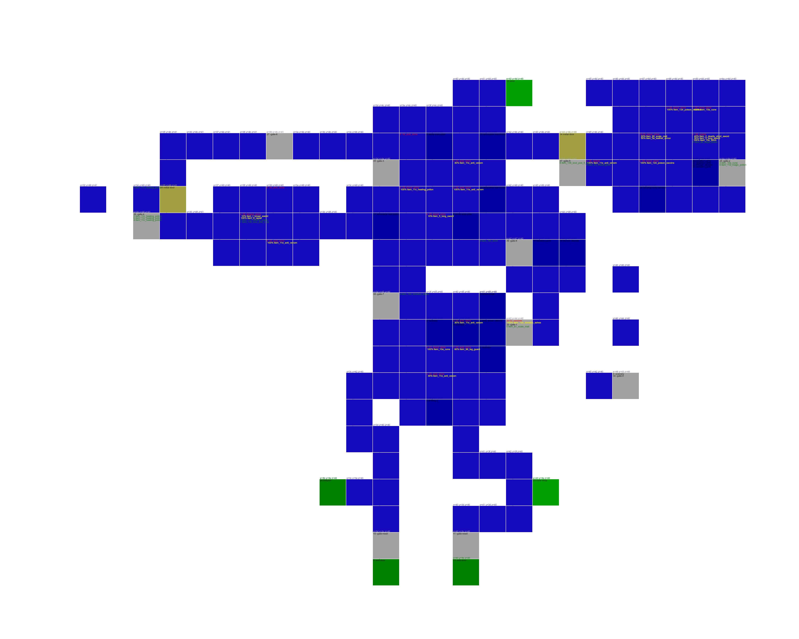
human_world_forgotten_region
Item Memory used 16
Creatures score 217
0 02_skeleton 0% 0x30 score 194 20% item_92_steel_boots_of_resist
1 02_skeleton 0% 0x30 score 194 30% item_82_caustic_hand_guard 50% item_81_fiery_gauntlet
2 02_skeleton 0% 0x30 score 194 50% item_9_rapier
3 02_skeleton 0% 0x30 score 194 40% item_49_crown_of_resist 60% item_48_crown
4 02_skeleton 0% 0x30 score 194 100% item_10a_cune
5 00_acid_skull 100% 0x30 score 218 50% item_8e_leather_boots
6 00_acid_skull 100% 0x30 score 218 100% item_11e_anti_venom
7 00_acid_skull 100% 0x30 score 218 100% item_11e_anti_venom
8 00_acid_skull 100% 0x30 score 218
9 01_blood_skull 100% 0x30 score 207
a 00_acid_skull 100% 0x30 score 218 100% item_11e_anti_venom
b 01_blood_skull 100% 0x30 score 207 20% item_11f_anti_paralytic
c 01_blood_skull 50% 0x30 score 207 100% item_124_poison_vaccine
d 01_blood_skull 25% 0x30 score 207 10% item_4a_crown_of_composure 100% item_127_acid_vaccine
e 05_blood_skull 100% 0x30 score 207 50% item_a4_small_shield
f 05_blood_skull 100% 0x30 score 207 100% item_126_bottle_of_light
10 05_blood_skull 100% 0x30 score 207
11 05_blood_skull 25% 0x30 score 207 30% item_90_steel_boots
12 05_blood_skull 25% 0x30 score 207 100% item_11f_anti_paralytic
13 05_blood_skull 25% 0x30 score 207 60% item_b_lethal_rapier 100% item_23_guardian_bastard_sword
6 unknown id=111 6 5b80 38c380 unknown tile( 46, 40, 3d) 46 40 3d 0 6f 0 0 0 0 4 0 0 0 0 17 0 1c fc ff f0 ff ff 0 ff
18 exit-totem Totem -> shadow_tower_part1 pos( 5 ,-5 ,5)
34 exit-door Exit -> shadow_tower_part1 pos( 1 ,6 ,1)
37 exit-door Jump down -> shadow_tower_part1 pos( 2 ,7 ,2)
41 exit-totem Drop in -> shadow_tower_part1 pos( 15 ,-8 ,15)
0 item_ac_great_shield
1 item_136_soul_pod_5_sp
2 item_10a_cune
3 item_11c_healing_potion
4 item_11c_healing_potion
5 item_136_soul_pod_5_sp
6 item_10a_cune
7 item_10a_cune
8 item_117_brass_key
9 item_126_bottle_of_light
a item_127_acid_vaccine
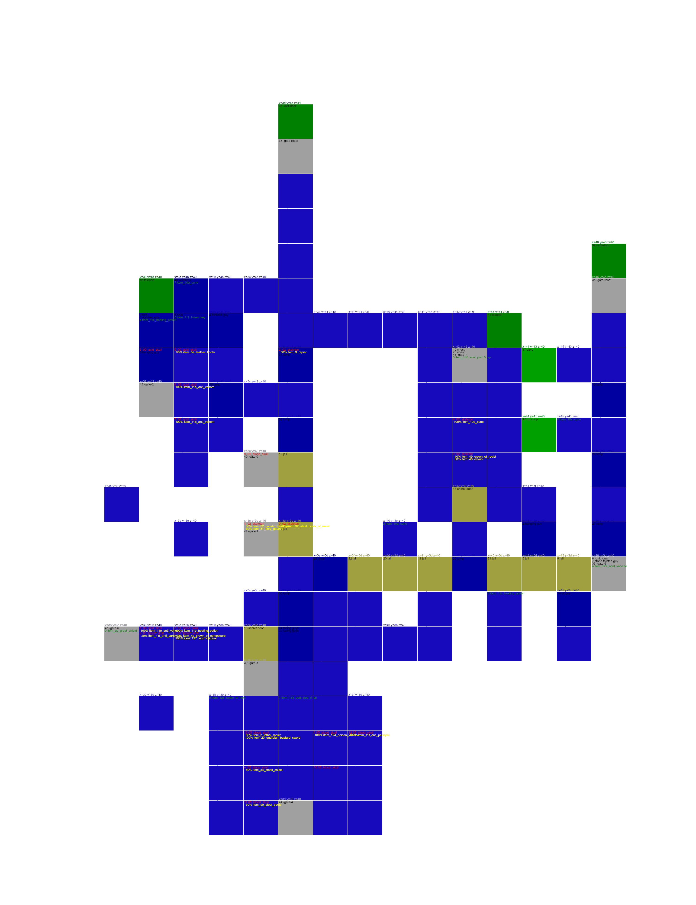
human_world_cursed_region
Item Memory used 14
Creatures score 118
0 02_tongue_imp 100% 0x30 score 131 70% item_a2_buckler
1 02_tongue_imp 100% 0x30 score 131
2 00_dark_spider 100% 0x35 score 116 100% item_11c_healing_potion
3 00_dark_spider 25% 0x35 score 116 50% item_8d_leather_boots
4 01_shadow_spider 100% 0x30 score 156 100% item_11d_magic_potion
5 00_dark_spider 100% 0x35 score 116 50% item_8f_hard_boots
6 00_dark_spider 50% 0x35 score 116 50% item_79_leather_glove 30% item_7c_wooden_glove
7 00_dark_spider 25% 0x35 score 116 100% item_11c_healing_potion
8 00_dark_spider 25% 0x35 score 116 100% item_11c_healing_potion
9 06_tongue_imp 100% 0x30 score 131 20% item_5f_magical_leather_armor 50% item_5e_leather_armor
a 06_tongue_imp 100% 0x30 score 131 50% item_1_short_sword
b 08_dark_spider 100% 0x30 score 116
c 08_dark_spider 100% 0x30 score 116 100% item_124_poison_vaccine
d 09_shadow_spider 100% 0x30 score 156 100% item_11d_magic_potion
e 08_dark_spider 25% 0x30 score 116 30% item_48_crown 80% item_47_cap
f 09_shadow_spider 25% 0x80 score 156 100% item_11c_healing_potion
10 09_shadow_spider 25% 0x10 score 156 100% item_11c_healing_potion
21 0a_guardian_a 100% 0x50 score 246 30% item_36_swift_morning_star 30% item_34_shining_mace
30 04_fat_mole_a 100% 0x30 score NaN
3 exit-door Entrance -> human_world_solitary_region pos( 9 ,2 ,9)
31 exit-door Guardian side -> shadow_tower_part1 pos( -4 ,6 ,-4)
0 item_4d_helm
1 item_11c_healing_potion
2 item_11c_healing_potion
3 item_7a_leather_glove
4 item_11c_healing_potion
5 item_10a_cune
6 item_39_axe
7 item_12e_dorados_ashes
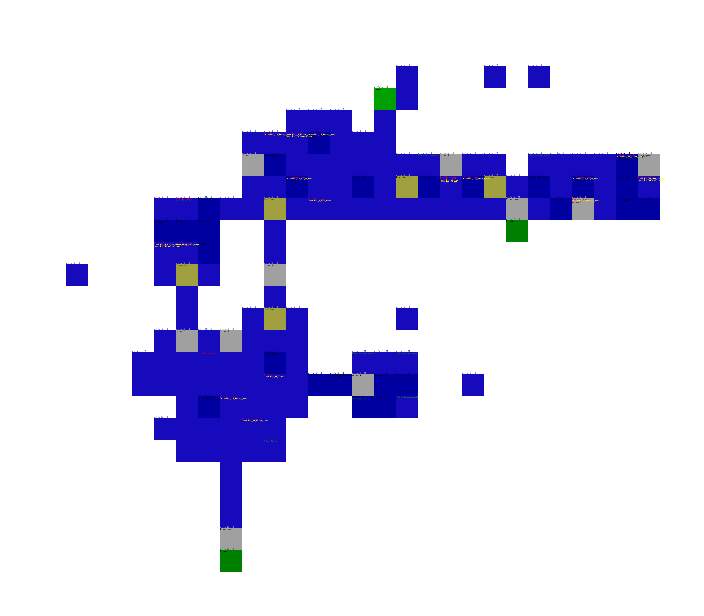
Earth World
earth_world_rotting_cavern
Item Memory used 15
Creatures score 151
0 02_elder 100% 0x30 score 218 100% item_11c_healing_potion
1 00_watcher_plant 100% 0x20 score 143
2 00_watcher_plant 100% 0x20 score 143 50% item_91_steel_boots
3 00_watcher_plant 50% 0x20 score 143
4 01_myconid 100% 0x30 score 281
5 01_myconid 100% 0x30 score 281 100% item_11e_anti_venom
6 01_myconid 50% 0x30 score 281 80% item_7b_leather_glove
7 00_watcher_plant 25% 0x20 score 143 100% item_124_poison_vaccine
8 06_elder 100% 0x40 score 218
9 06_elder 100% 0x40 score 218 100% item_11e_anti_venom
a 04_minor_dwarf 100% 0x35 score 151 100% item_10a_cune
b 04_minor_dwarf 100% 0x35 score 151 100% item_11c_healing_potion
c 04_minor_dwarf 50% 0x35 score 151 100% item_10a_cune
d 09_imp 100% 0x20 score 165 20% item_d7_ring_of_poison
e 09_imp 100% 0x20 score 165
f 09_imp 100% 0x20 score 165
10 09_imp 100% 0x20 score 165 10% item_d9_ring_of_protect
11 09_imp 100% 0x20 score 165 20% item_c9_summoner_ring_of_frost
12 08_star_serpent 100% 0x25 score 198 100% item_e8_bracelet_of_balance
13 08_star_serpent 50% 0x25 score 198 20% item_e7_bracelet_of_resist 20% item_d3_dark_ring 100% item_120_divine_symbol
14 08_star_serpent 25% 0x25 score 198 70% item_a7_large_shield 100% item_120_divine_symbol
15 0d_tondrom 100% 0x10 score 209
16 0d_tondrom 100% 0x10 score 209
17 0d_tondrom 25% 0x10 score 209
18 0d_tondrom 25% 0x10 score 209
19 0c_barrel_snail 100% 0x20 score 222 100% item_11e_anti_venom
1a 0c_barrel_snail 100% 0x20 score 222 100% item_11e_anti_venom
1b 0e_elder 100% 0x60 score 218 80% item_49_crown_of_resist
1c 0e_elder 100% 0x30 score 218 100% item_120_divine_symbol
1d 0e_elder 100% 0x30 score 218 100% item_120_divine_symbol
1e 0e_elder 25% 0x30 score 218 50% item_63_plate_mail 50% item_62_scale_mail_of_curing
20 05_dwarfling 100% 0x10 score 79
30 0a_blank 100% 0x20 score 35
13 exit-door Entrance -> shadow_tower_part1 pos( 0 ,9 ,0)
0 item_11_broad_sword
1 item_11c_healing_potion
2 item_11c_healing_potion
3 item_136_soul_pod_5_sp
4 item_11e_anti_venom
5 item_124_poison_vaccine
6 item_11e_anti_venom
7 item_118_iron_key
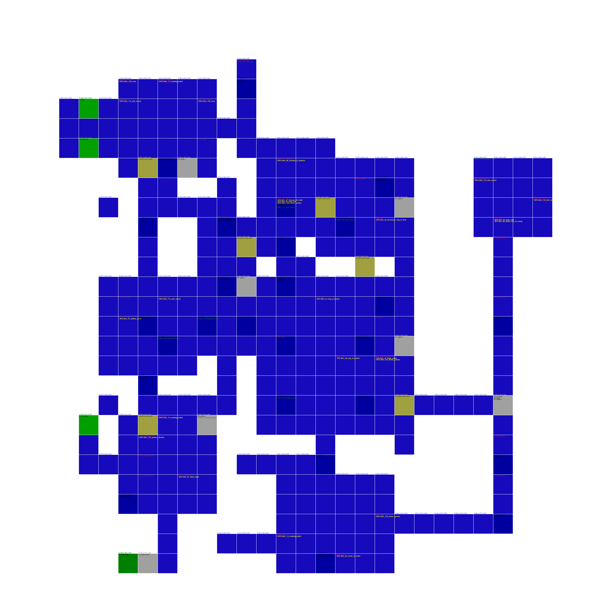
earth_world_poisonous_cavern
Item Memory used 15
Creatures score 264
0 02_watcher_plant 100% 0x15 score 143 100% item_10a_cune
1 02_watcher_plant 100% 0x15 score 143
2 02_watcher_plant 100% 0x15 score 143 100% item_11c_healing_potion
3 01_beak_plant 100% 0x15 score 189 60% item_33_crushing_mace
4 01_beak_plant 100% 0x15 score 189
5 01_beak_plant 100% 0x15 score 189
6 01_beak_plant 50% 0x15 score 189
7 02_watcher_plant 50% 0x15 score 143 100% item_10a_cune
8 02_watcher_plant 50% 0x15 score 143 100% item_10a_cune
9 02_watcher_plant 50% 0x15 score 143 100% item_11c_healing_potion
a 02_watcher_plant 25% 0x15 score 143 100% item_11c_healing_potion
b 09_dwarf_warrior 100% 0x50 score 198 70% item_5f_magical_leather_armor
c 09_dwarf_warrior 100% 0x60 score 198 100% item_10c_torch
d 08_trickster 100% 0x40 score 160 40% item_ec_bracelet_of_recovery
e 08_trickster 100% 0x40 score 160
f 08_trickster 25% 0x40 score 160
10 0c_hanging_dead 100% 0x15 score 109
11 0c_hanging_dead 100% 0x15 score 109
12 0c_hanging_dead 100% 0x15 score 109
13 0c_hanging_dead 100% 0x15 score 109
14 0c_hanging_dead 100% 0x15 score 109 80% item_d7_ring_of_poison
15 0c_hanging_dead 100% 0x15 score 109
16 0e_watcher_plant 100% 0x20 score 143 100% item_11c_healing_potion
17 0e_watcher_plant 100% 0x20 score 143 100% item_10a_cune
18 0e_watcher_plant 25% 0x20 score 143 100% item_11c_healing_potion
19 0d_trickster 100% 0x30 score 211
1a 0d_trickster 100% 0x30 score 211 100% item_42_bow
1b 0d_trickster 50% 0x30 score 211 40% item_ce_soul_ring
1d 02_watcher_plant 100% 0x20 score 143 100% item_124_poison_vaccine
1e 0d_trickster 100% 0x30 score 211 30% item_14_crushing_broad_sword
1f 0d_trickster 100% 0x30 score 211 30% item_fb_magical_amulet
20 00_duhrin 100% 0x10 score 285 100% item_12f_spirit_key
30 05_blank 100% 0x20 score NaN
31 04_auriel_b 100% 0x70 score 396
32 0b_blank 100% 0x50 score NaN
33 0a_blank 100% 0x50 score 39
10 exit-door Rock guy -> earth_world_quaking_cavern pos( 0 ,0 ,0)
13 exit-door Poison -> earth_world_stone_cavern pos( 0 ,0 ,0)
17 exit-door Entrance -> shadow_tower_part1 pos( 4 ,9 ,4)
0 item_11c_healing_potion
1 item_11c_healing_potion
2 item_a5_shield_of_resist
3 item_10a_cune
5 item_11c_healing_potion
6 item_136_soul_pod_5_sp
7 item_136_soul_pod_5_sp
8 item_124_poison_vaccine
a item_c4_summoner_ring_of_fire
b item_11c_healing_potion
1c item_3_long_sword
1d item_12f_spirit_key
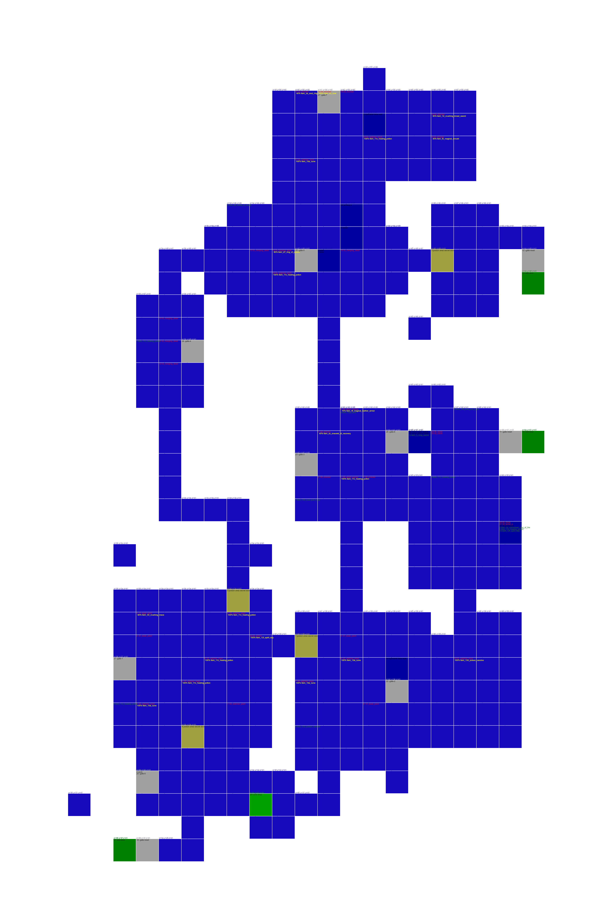
earth_world_stone_cavern
Item Memory used 16
Creatures score 232
0 01_demon_bat 100% 0x60 score 131 40% item_5_long_sword
1 01_demon_bat 100% 0x50 score 131 10% item_7_fiery_long_sword
2 01_demon_bat 100% 0x50 score 131
3 05_hobble_worm 50% 0x30 score 236
4 05_hobble_worm 50% 0x30 score 236 100% item_11c_healing_potion
5 05_hobble_worm 100% 0x30 score 236 70% item_3a_giant_axe
6 05_hobble_worm 100% 0x30 score 236 20% item_af_dark_great_shield 100% item_11c_healing_potion
7 05_hobble_worm 50% 0x30 score 236 50% item_4c_devil_crown
8 05_hobble_worm 25% 0x30 score 236 100% item_11c_healing_potion
9 05_hobble_worm 25% 0x30 score 236 100% item_11c_healing_potion
a 0a_barrel_snail 100% 0x40 score 264
b 0a_barrel_snail 100% 0x40 score 264 100% item_120_divine_symbol
c 08_clay_servant 100% 0x25 score 371 50% item_90_steel_boots
d 08_clay_servant 100% 0x25 score 371 100% item_18_bastard_sword
e 08_clay_servant 100% 0x25 score 371 40% item_e9_bracelet_of_movement
f 08_clay_servant 80% 0x25 score 371
10 0a_barrel_snail 25% 0x40 score 264 60% item_60_scale_mail 100% item_120_divine_symbol
11 0a_barrel_snail 25% 0x40 score 264 100% item_120_divine_symbol
12 0a_barrel_snail 25% 0x40 score 264 40% item_9b_harden_leg_guard
13 0c_dybbuk 100% 0x25 score 231 100% item_db_caustic_ring
14 0d_crying_root 100% 0x20 score 179 100% item_10e_sacred_feather
15 0d_crying_root 100% 0x20 score 179 100% item_10e_sacred_feather
16 0d_crying_root 100% 0x20 score 179 100% item_10e_sacred_feather
17 0d_crying_root 10% 0x80 score 179 100% item_d4_dark_ring
30 00_dybbuk 100% 0x50 score 231
31 04_dybbuk 100% 0x0 score 231
32 04_dybbuk 100% 0x0 score 231
4 exit-door Entrance -> earth_world_poisonous_cavern pos( 10 ,1 ,10)
7 exit-door Exit -> earth_world_false_pit_cavern pos( -3 ,0 ,-3)
0 item_10a_cune
1 item_10a_cune
2 item_130_blue_crystal
3 item_126_bottle_of_light
4 item_126_bottle_of_light
5 item_126_bottle_of_light
6 item_11c_healing_potion
7 item_11c_healing_potion

earth_world_quaking_cavern
Item Memory used 16
Creatures score 108
0 01_blue_flicker 100% 0x30 score 185
1 01_blue_flicker 100% 0x30 score 185 100% item_10d_lamp
2 01_blue_flicker 100% 0x30 score 185
3 01_blue_flicker 100% 0x30 score 185 100% item_124_poison_vaccine
4 01_blue_flicker 100% 0x30 score 185 100% item_10d_lamp
5 01_blue_flicker 100% 0x30 score 185 100% item_10d_lamp
6 00_sand_leech_a 100% 0x60 score 89 100% item_10a_cune
7 00_sand_leech_a 100% 0x10 score 89
8 00_sand_leech_a 100% 0x10 score 89 100% item_10a_cune
9 00_sand_leech_a 100% 0x10 score 89
a 00_sand_leech_a 50% 0x10 score 89 80% item_fb_magical_amulet
b 05_acid_pod 100% 0x90 score 191 20% item_83_gauntlet 50% item_7c_wooden_glove
c 04_kiljoy 10% 0x35 score 270
d 04_kiljoy 10% 0x35 score 270 60% item_cf_soul_ring
e 04_kiljoy 10% 0x35 score 270 60% item_e7_bracelet_of_resist
f 05_acid_pod 50% 0x30 score 191 100% item_12e_dorados_ashes
10 05_acid_pod 50% 0x30 score 191 100% item_12e_dorados_ashes
11 05_acid_pod 50% 0x30 score 191 100% item_12e_dorados_ashes
12 09_cocoon_plant 100% 0x30 score 170 100% item_11e_anti_venom
13 09_cocoon_plant 100% 0x30 score 170 50% item_11e_anti_venom
14 09_cocoon_plant 50% 0x30 score 170 100% item_11e_anti_venom
15 09_cocoon_plant 50% 0x30 score 170 100% item_11e_anti_venom
16 08_torg 100% 0x40 score 369 90% item_10_broad_sword
17 08_torg 100% 0x40 score 369 100% item_10d_lamp
18 08_torg 100% 0x40 score 369 80% item_62_scale_mail_of_curing
20 02_sand_leech_b 100% 0x10 score 437 20% item_95_caustic_steel_boots
21 02_sand_leech_b 100% 0x10 score 437 100% item_10a_cune
22 02_sand_leech_b 100% 0x10 score 437 100% item_42_bow
3 exit-door Entrance -> earth_world_poisonous_cavern pos( 9 ,1 ,9)
0 item_7d_wooden_glove
1 item_a9_large_shield_of_balance
2 item_124_poison_vaccine
3 item_125_dust_of_rage
4 item_10a_cune
5 item_125_dust_of_rage
6 item_10a_cune
7 item_10a_cune
8 item_124_poison_vaccine
9 item_125_dust_of_rage

earth_world_false_pit_cavern
Item Memory used 16
Creatures score 369
0 00_earth_knight 100% 0x50 score 386 50% item_a8_harden_large_shield 50% item_a9_large_shield_of_balance
1 01_acid_pod 100% 0x50 score 191 100% item_11c_healing_potion
2 01_acid_pod 50% 0x10 score 191 100% item_11c_healing_potion
3 01_acid_pod 50% 0x10 score 191 100% item_11c_healing_potion
4 01_acid_pod 50% 0x10 score 191 100% item_12e_dorados_ashes
5 01_acid_pod 50% 0x10 score 191 100% item_11c_healing_potion
6 05_cocoon_plant 50% 0x10 score 191 100% item_12e_dorados_ashes
7 05_cocoon_plant 50% 0x10 score 191 100% item_11c_healing_potion
8 05_cocoon_plant 50% 0x10 score 191 50% item_12e_dorados_ashes
9 04_cannon_snail 100% 0x20 score 264 60% item_81_fiery_gauntlet
a 04_cannon_snail 100% 0x20 score 264 40% item_95_caustic_steel_boots 40% item_91_steel_boots
b 08_guardian_b 75% 0x30 score 385 100% item_10a_cune
c 08_guardian_b 75% 0x30 score 385 100% item_10a_cune
d 09_sloth_bug 100% 0x20 score 264 30% item_51_full_helm
e 09_sloth_bug 100% 0x20 score 264 30% item_64_plate_mail
f 09_sloth_bug 50% 0x20 score 264 60% item_82_caustic_hand_guard
10 09_sloth_bug 50% 0x20 score 264 50% item_4b_wizard_crown
11 0c_ray_plant 100% 0x50 score 384 100% item_fe_deadly_amulet
12 0d_cocoon_plant 100% 0x50 score 191 100% item_11c_healing_potion
13 0d_cocoon_plant 100% 0x10 score 191 100% item_11c_healing_potion
14 0d_cocoon_plant 100% 0x10 score 191 100% item_11c_healing_potion
15 0d_cocoon_plant 100% 0x10 score 191 50% item_11d_magic_potion
16 0d_cocoon_plant 10% 0x10 score 191 100% item_d9_ring_of_protect
1 exit-door Bridge -> earth_world_hostile_rock_cavern pos( -2 ,0 ,-2)
3 exit-door Entrance -> earth_world_stone_cavern pos(-16 ,5,-16)
5 unknown id=96 5 5b68 7f8b68 unknown tile( 44, 40, 38) 44 40 38 0 60 0 0 0 a8 fd 40 f1 0 f8 3d 0 64 fe 0 0 ff ff 0 ff
6 unknown id=96 6 5b80 7f8b80 unknown tile( 44, 40, 38) 44 40 38 0 60 0 0 0 58 2 40 f1 0 f8 3d 0 64 fe 0 0 ff ff 0 ff
7 unknown id=96 7 5b98 7f8b98 unknown tile( 44, 40, 38) 44 40 38 0 60 0 0 0 0 0 40 f1 58 fa 3d 0 60 fe 0 0 ff ff 0 ff
8 unknown id=96 8 5bb0 7f8bb0 unknown tile( 44, 40, 38) 44 40 38 0 60 0 0 0 0 0 40 f1 a8 f5 3e 0 5c fe 0 0 ff ff 0 ff
11 exit-door Exit -> shadow_tower_part2 pos( 0 ,1 ,0)
16 exit-totem Totem -> shadow_tower_part1 pos( 6 ,1 ,6)
19 exit-totem Jump in -> shadow_tower_part1 pos( 33 ,-1 ,33)
0 item_ea_bracelet_of_composure
1 item_10a_cune
2 item_b1_tower_shield
3 item_b3_tower_shield_of_honor
4 item_11d_magic_potion
5 item_11d_magic_potion
6 item_139_soul_pod_14_sp
7 item_139_soul_pod_14_sp
8 item_139_soul_pod_14_sp
9 item_10a_cune
a item_10a_cune
b item_130_blue_crystal
c item_12e_dorados_ashes
d item_12e_dorados_ashes

earth_world_hostile_rock_cavern
Item Memory used 12
Creatures score 614
0 01_earth_knight 100% 0x30 score 386 100% item_11f_anti_paralytic
1 01_earth_knight 100% 0x30 score 386 100% item_11f_anti_paralytic
2 01_earth_knight 100% 0x30 score 386 100% item_11d_magic_potion
3 01_earth_knight 100% 0x30 score 386 60% item_4f_magical_helm 100% item_11f_anti_paralytic
4 05_earth_knight 100% 0x60 score 386 100% item_124_poison_vaccine
5 05_earth_knight 100% 0x60 score 386 100% item_11d_magic_potion
6 00_black_onyx 100% 0x30 score 620 50% item_11c_healing_potion
7 00_black_onyx 100% 0x30 score 620 100% item_126_bottle_of_light
8 00_black_onyx 50% 0x30 score 620 50% item_11e_anti_venom
9 00_black_onyx 25% 0x30 score 620 100% item_126_bottle_of_light
a 00_black_onyx 25% 0x30 score 620 100% item_124_poison_vaccine
21 04_dread_knight 100% 0x10 score 767 0% item_8_silent_sword 0% item_2c_deadly_great_sword 0% item_27_great_sword
1 exit-door Entrance -> earth_world_false_pit_cavern pos( 10 ,0 ,10)
3 exit-totem Boss room -> - pos( 15 ,-3 ,15)
0 item_9a_leg_guard
1 item_d7_ring_of_poison
2 item_67_plate_mail_of_curing
3 item_11c_healing_potion
4 item_136_soul_pod_5_sp
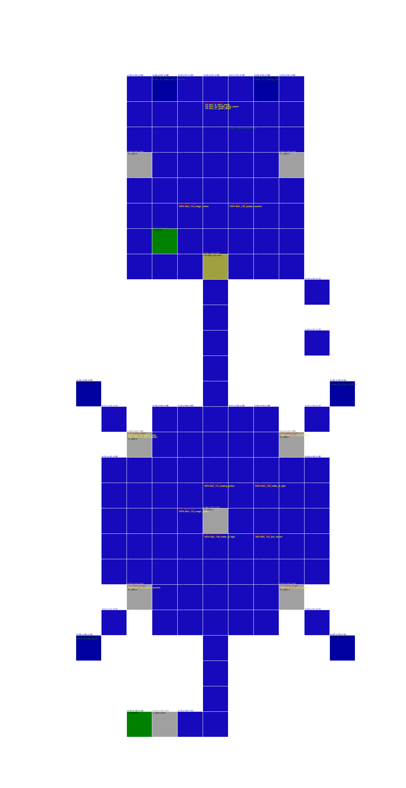
Fire World
fire_world_burning_cavern
Item Memory used 16
Creatures score 532
0 02_mystic_tower 100% 0x30 score 481 10% item_3_long_sword
1 02_mystic_tower 100% 0x30 score 481 100% item_10d_lamp
2 02_mystic_tower 100% 0x50 score 481 25% item_6_keenest_long_sword
3 02_mystic_tower 50% 0x30 score 481
4 02_mystic_tower 15% 0x30 score 481 100% item_123_fire_world_stone
5 02_mystic_tower 15% 0x30 score 481 100% item_123_fire_world_stone
6 06_mystic_tower 100% 0x80 score 481
7 06_mystic_tower 30% 0x30 score 481
8 06_mystic_tower 30% 0x30 score 481
9 04_berzerker 25% 0x50 score 538 50% item_b_lethal_rapier
a 06_mystic_tower 100% 0x60 score 481 100% item_10d_lamp
b 06_mystic_tower 100% 0x60 score 481 50% item_10d_lamp
c 06_mystic_tower 100% 0x60 score 481
d 06_mystic_tower 100% 0x60 score 481
e 08_berzerker 100% 0x60 score 538 30% item_93_steel_boots_of_curing 30% item_94_steel_boots_of_resist
f 08_berzerker 100% 0x60 score 538 30% item_c5_summoner_ring_of_fire
10 09_iron_crusher 100% 0x60 score 491
11 08_berzerker 25% 0x90 score 538
12 08_berzerker 25% 0x90 score 538
13 0e_mystic_tower 100% 0x40 score 481 50% item_19_bastard_sword
14 0e_mystic_tower 100% 0x40 score 481
15 0e_mystic_tower 50% 0x30 score 481 50% item_50_full_helm
16 0d_dweller 100% 0x40 score 491 30% item_32_mace
17 0d_dweller 100% 0x40 score 491 10% item_73_full_plate
18 0d_dweller 100% 0x40 score 491 40% item_68_plate_mail
19 0d_dweller 100% 0x40 score 491 50% item_3c_crushing_axe
1a 0e_mystic_tower 50% 0x30 score 481 40% item_b2_tower_shield
37 exit-door Entrance -> shadow_tower_part2 pos( -5 ,3 ,-5)
93 exit-portal Room -> shadow_tower_part1 pos( 18 ,33 ,18)
94 exit-portal Platform -> - pos( 24 ,12 ,24)
99 unknown id=252 99 6438 9b3c38 unknown tile( 35, 3f, 38) 35 3f 38 0 fc 0 0 0 0 0 0 4 0 0 8d 0 21 4 fd 0 0 12 2 0
0 item_11c_healing_potion
1 item_11c_healing_potion
2 item_fc_amulet_of_movement
3 item_b9_gothic_shield
4 item_6a_fiery_plate_mail

fire_world_molten_cavern
Item Memory used 16
Creatures score 14922
0 01_horned_skull 100% 0x20 score 6484
1 01_horned_skull 100% 0x30 score 6484
2 01_horned_skull 100% 0x30 score 6484
3 01_horned_skull 100% 0x60 score 6484
4 01_horned_skull 30% 0x30 score 6484 80% item_ed_mind_bracelet
5 01_horned_skull 30% 0x30 score 6484
6 06_mystic_tower 100% 0x20 score 481
7 06_mystic_tower 50% 0x20 score 481 100% item_10d_lamp
8 06_mystic_tower 50% 0x20 score 481 80% item_ff_amulet_of_composure
9 04_berzerker 100% 0x60 score 538 30% item_12e_dorados_ashes
a 04_berzerker 100% 0x60 score 538 30% item_12e_dorados_ashes
b 04_berzerker 100% 0x60 score 538 30% item_12e_dorados_ashes
c 04_berzerker 50% 0x60 score 538
d 04_berzerker 50% 0x60 score 538
e 09_steel_servant 100% 0x30 score 6575 50% item_3d_deadly_axe 100% item_11c_healing_potion
f 09_steel_servant 50% 0x30 score 6575 100% item_11c_healing_potion
10 09_steel_servant 50% 0x30 score 6575 100% item_11c_healing_potion
11 0d_arachness 100% 0x30 score 617 50% item_51_full_helm
12 0d_arachness 50% 0x30 score 617 50% item_84_gauntlet
13 0d_arachness 50% 0x30 score 617 70% item_df_ring_of_desire
14 0d_arachness 100% 0x30 score 617 100% item_123_fire_world_stone
15 0d_arachness 50% 0x30 score 617
16 0d_arachness 50% 0x30 score 617 50% item_c1_gothic_shield_of_rage
21 02_dead_abraxus 100% 0x10 score 219
30 00_abraxus 100% 0x10 score 16599
31 0c_fat_mole_c 100% 0x5 score 16388
32 08_fat_mole_b 100% 0x5 score 16388
19 exit-portal Platform -> shadow_tower_part1 pos( 20 ,7 ,20)
27 exit-portal Abraxus -> - pos( 18 ,1 ,18)
0 item_11c_healing_potion
1 item_139_soul_pod_14_sp
2 item_11e_anti_venom
3 item_ae_shining_great_shield
4 item_9c_fiery_leg_guard
5 item_11e_anti_venom
6 item_139_soul_pod_14_sp
7 item_8_silent_sword

fire_world_phoenix_cave
Item Memory used 16
Creatures score 5576
0 02_fire_jinn 100% 0x80 score 6226
1 02_fire_jinn 100% 0x40 score 6226 100% item_11c_healing_potion
2 02_fire_jinn 100% 0x40 score 6226 30% item_83_gauntlet
3 02_fire_jinn 50% 0x80 score 6226 30% item_98_steel_boots_of_resist 40% item_93_steel_boots_of_curing
4 02_fire_jinn 50% 0x80 score 6226
5 02_fire_jinn 50% 0x40 score 6226 100% item_11c_healing_potion
6 06_fire_jinn 100% 0x80 score 6226 10% item_a_rapier 100% item_11c_healing_potion
7 06_fire_jinn 100% 0x40 score 6226 60% item_7_fiery_long_sword
8 06_fire_jinn 100% 0x40 score 6226 100% item_11c_healing_potion
9 06_fire_jinn 100% 0x40 score 6226 20% item_c_shadow_blade
a 05_armored_jinn 100% 0x80 score 937
b 05_armored_jinn 100% 0x80 score 937 30% item_123_fire_world_stone
c 05_armored_jinn 100% 0x40 score 937 80% item_123_fire_world_stone
d 06_fire_jinn 100% 0x40 score 6226 50% item_11c_healing_potion
e 05_armored_jinn 100% 0x80 score 937
f 04_jinn_lord 100% 0x40 score 13737 40% item_c5_summoner_ring_of_fire 10% item_101_amulet_of_resist 100% item_123_fire_world_stone
10 06_fire_jinn 100% 0x80 score 6226 100% item_11c_healing_potion
11 06_fire_jinn 50% 0x40 score 6226 70% item_16_guardian_broad_sword
12 06_fire_jinn 50% 0x40 score 6226
13 06_fire_jinn 50% 0x80 score 6226 100% item_11c_healing_potion
14 06_fire_jinn 50% 0x80 score 6226
0 exit-door Entrance -> shadow_tower_part2 pos( 5 ,3 ,5)
1 exit-door Exit -> shadow_tower_part2 pos( 5 ,3 ,5)
0 item_aa_fiery_large_shield
1 item_67_plate_mail_of_curing
2 item_123_fire_world_stone
3 item_fd_amulet_of_guardian
4 item_54_fiery_full_helm
5 item_127_acid_vaccine
6 item_12e_dorados_ashes
7 item_10a_cune
8 item_10a_cune
9 item_10a_cune
a item_10a_cune
b item_10a_cune
c item_10a_cune
d item_10a_cune
e item_10a_cune

fire_world_ashen_cavern
Item Memory used 16
Creatures score 6263
0 01_berzerker 100% 0x50 score 538
1 01_berzerker 100% 0x50 score 538 30% item_126_bottle_of_light
2 01_berzerker 100% 0x50 score 538 20% item_96_swift_steel_boots 100% item_126_bottle_of_light
3 00_bone_demon 100% 0x50 score 6473 100% item_10a_cune
4 00_bone_demon 100% 0x50 score 6473 100% item_10a_cune
5 01_berzerker 100% 0x50 score 538
6 01_berzerker 50% 0x50 score 538 30% item_126_bottle_of_light
7 01_berzerker 50% 0x50 score 538 50% item_4c_devil_crown
8 00_bone_demon 25% 0x50 score 6473
9 04_zygote 100% 0x50 score 1203
a 04_zygote 100% 0x50 score 1203
b 04_zygote 100% 0x50 score 1203
c 0d_damned_angel 15% 0x5 score 682 40% item_44_bow_gun
d 05_horned_skull 100% 0x50 score 6484 20% item_d8_ring_of_poison
e 05_horned_skull 100% 0x50 score 6484 40% item_cf_soul_ring
f 05_horned_skull 100% 0x50 score 6484
10 04_zygote 50% 0x50 score 1203
11 04_zygote 50% 0x50 score 1203 30% item_6f_plate_mail_of_protect
12 0a_ruby_demon 100% 0x50 score 6638 100% item_11f_anti_paralytic
13 0a_ruby_demon 100% 0x50 score 6638 100% item_11f_anti_paralytic
14 09_cerberus 100% 0x50 score 13767 100% item_110_fiery_key
15 09_cerberus 100% 0x50 score 13767 35% item_fe_deadly_amulet
16 09_cerberus 50% 0x50 score 13767
17 09_cerberus 50% 0x50 score 13767 40% item_b4_harden_tower_shield
20 0c_ebony_knight 100% 0x100 score 3054 100% item_1e_fiery_bastard_sword
6 exit-portal Start -> - pos( 24 ,0 ,24)
16 unknown id=169 16 5c70 92c470 unknown tile( 51, 40, 51) 51 40 51 0 a9 0 0 e 0 4 0 0 0 4 ba 0 14 fc ff ff 7 ff 0 0
17 exit-portal Cerberus -> illusion_world_bewilderment_domain pos( 20 ,-6 ,20)
0 item_84_gauntlet
1 item_11d_magic_potion
2 item_11d_magic_potion
3 item_14_crushing_broad_sword
4 item_c7_priest_ring_of_fire
6 item_10a_cune
7 item_131_flaming_key

Water World
water_world_impure_pool_area
Item Memory used 16
Creatures score 14091
0 01_horned_slime 100% 0x30 score 271
1 01_horned_slime 100% 0x30 score 271 100% item_123_fire_world_stone
2 01_horned_slime 100% 0x30 score 271 100% item_10e_sacred_feather
3 01_horned_slime 100% 0x30 score 271
4 01_horned_slime 100% 0x30 score 271
5 02_blood_brain 100% 0x15 score 264
6 02_blood_brain 50% 0x30 score 264
7 02_blood_brain 50% 0x30 score 264 100% item_10a_cune
8 02_blood_brain 50% 0x30 score 264
9 02_blood_brain 30% 0x30 score 264 100% item_10a_cune
a 05_horned_slime 100% 0x30 score 271 50% item_123_fire_world_stone
b 05_horned_slime 100% 0x30 score 271 100% item_123_fire_world_stone
c 06_dweller 100% 0x30 score 398 100% item_11c_healing_potion
d 05_horned_slime 50% 0x30 score 271 100% item_123_fire_world_stone
e 05_horned_slime 50% 0x30 score 271 50% item_123_fire_world_stone
f 06_dweller 25% 0x30 score 398
10 0a_dweller 100% 0x30 score 398 50% item_11c_healing_potion
11 0a_dweller 100% 0x30 score 398
12 0a_dweller 100% 0x30 score 398 50% item_11c_healing_potion
13 09_dementor 100% 0x50 score 687 80% item_80_metal_glove 100% item_127_acid_vaccine
14 09_dementor 50% 0x50 score 687 80% item_37_frosty_morning_star 100% item_127_acid_vaccine
15 0c_worm_face 100% 0x40 score 475 40% item_6c_caustic_plate_mail
16 0c_worm_face 100% 0x40 score 475 20% item_9d_frosty_leg_guard 100% item_127_acid_vaccine
17 0d_hatchlin 25% 0x30 score 30404 100% item_cb_balance_ring_of_frost
18 0c_worm_face 100% 0x40 score 475 100% item_12e_dorados_ashes
19 0c_worm_face 100% 0x40 score 475 100% item_12e_dorados_ashes
1a 0c_worm_face 50% 0x40 score 475 20% item_1f_frosty_bastard_sword 100% item_127_acid_vaccine
1b 0c_worm_face 25% 0x40 score 475 100% item_120_divine_symbol
1c 0c_worm_face 25% 0x40 score 475 100% item_120_divine_symbol
30 00_fat_mole_f 100% 0x5 score 16390 0% item_127_acid_vaccine
31 04_blank 100% 0x5 score 191
0 unknown id=90 0 5af0 5352f0 unknown tile( 44, 40, 40) 44 40 40 0 5a 0 0 0 0 0 0 0 0 0 e3 0 40 fe 0 0 ff ff 0 ff
9 exit-door Entrance -> shadow_tower_part2 pos( 4 ,5 ,4)
11 exit-door Flush down -> shadow_tower_part3 pos( 4 ,1 ,4)
14 exit-totem Totem -> shadow_tower_part1 pos( 17 ,8 ,17)
21 unknown id=105 21 5ce8 5354e8 unknown tile( 42, 40, 46) 42 40 46 0 69 0 0 0 0 0 0 0 0 0 d 1 40 fe 0 0 ff ff 0 ff
22 unknown id=106 22 5d00 535500 unknown tile( 42, 40, 45) 42 40 45 0 6a 0 0 0 0 0 0 0 0 0 e 1 40 fe 0 0 ff ff 0 ff
23 unknown id=107 23 5d18 535518 unknown tile( 41, 40, 46) 41 40 46 0 6b 0 0 0 0 0 0 0 0 0 9 1 40 fe 0 0 ff ff 0 ff
24 unknown id=108 24 5d30 535530 unknown tile( 41, 40, 45) 41 40 45 0 6c 0 0 0 0 0 0 0 0 0 a 1 40 fe 0 0 ff ff 0 ff
0 item_6_keenest_long_sword
1 item_12b_pitcher_of_nadya
2 item_114_floodgate_key
3 item_10a_cune
4 item_10a_cune
5 item_127_acid_vaccine

water_world_sunken_river_area
Item Memory used 13
Creatures score 562
0 00_kabasaur 100% 0x50 score 563 100% item_114_floodgate_key
1 00_kabasaur 20% 0x50 score 563 100% item_122_evil_eye
2 00_kabasaur 20% 0x50 score 563 100% item_11c_healing_potion
3 05_water_knight 100% 0x40 score 528 50% item_1f_frosty_bastard_sword
4 05_water_knight 100% 0x70 score 528 20% item_6b_frosty_plate_mail 40% item_9f_caustic_leg_guard
5 04_kabasaur 100% 0x40 score 563 50% item_f_broad_sword
6 04_kabasaur 100% 0x40 score 563 50% item_27_great_sword 20% item_122_evil_eye
7 04_kabasaur 100% 0x40 score 563 50% item_e9_bracelet_of_movement 100% item_11f_anti_paralytic
8 04_kabasaur 50% 0x40 score 563 10% item_da_sorcerer_ring_of_poison 100% item_122_evil_eye
9 04_kabasaur 50% 0x40 score 563 40% item_ca_summoner_ring_of_frost 30% item_122_evil_eye
a 05_water_knight 30% 0x40 score 528 50% item_11c_healing_potion
b 05_water_knight 30% 0x40 score 528 50% item_11c_healing_potion
c 05_water_knight 30% 0x40 score 528 100% item_115_mermaid_key
1 exit-door Entrance -> shadow_tower_part3 pos( 0 ,1 ,0)
5 exit-door Pool -> water_world_watery_labyrinth_area pos( -9 ,0 ,-9)
0 item_10a_cune
1 item_cd_sorcerer_ring_of_frost
2 item_b6_caustic_tower_shield
3 item_ef_deadly_bracelet
4 item_10a_cune
5 item_136_soul_pod_5_sp
6 item_136_soul_pod_5_sp
7 item_139_soul_pod_14_sp
1c item_114_floodgate_key
1d item_114_floodgate_key
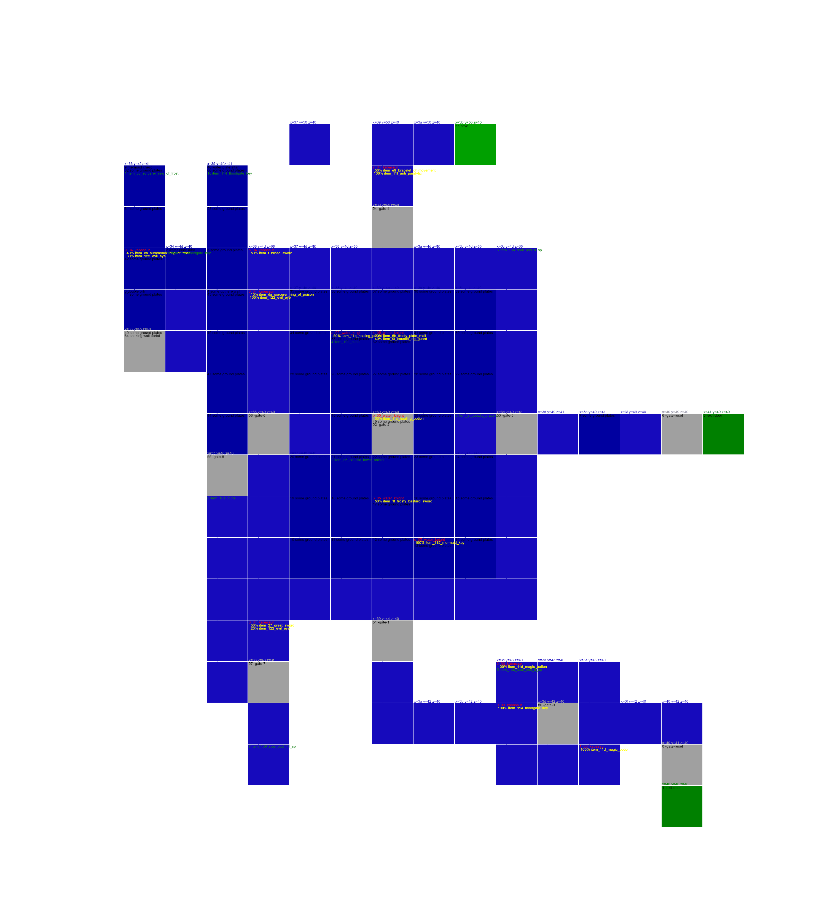
water_world_white_rain_area
Item Memory used 11
Creatures score 524
0 00_winged_worm 100% 0x30 score 510 60% item_3b_giant_axe
1 00_winged_worm 100% 0x30 score 510 50% item_100_amulet_of_curing
2 00_winged_worm 100% 0x30 score 510 60% item_9d_frosty_leg_guard
3 00_winged_worm 50% 0x60 score 510 100% item_12e_dorados_ashes
4 00_winged_worm 50% 0x30 score 510
5 00_winged_worm 50% 0x30 score 510 100% item_12e_dorados_ashes
6 00_winged_worm 50% 0x30 score 510 100% item_137_soul_pod_53_sp
7 04_dragon_turtle 100% 0x60 score 1175 30% item_bc_gothic_shield_of_resist 50% item_a8_harden_large_shield 80% item_a3_small_shield
8 04_dragon_turtle 100% 0x60 score 1175 20% item_6b_frosty_plate_mail 100% item_127_acid_vaccine
9 04_dragon_turtle 25% 0x90 score 1175 100% item_11c_healing_potion
20 05_magi_magus 100% 0x10 score 1256 20% item_d_shadow_wolf 20% item_24_dark_sword 100% item_ee_mighty_ring
4 exit-door Entrance -> water_world_watery_labyrinth_area pos( 8 ,0 ,8)
6 exit-totem Totem -> shadow_tower_part1 pos( 9 ,-2 ,9)
0 item_55_great_helm
1 item_de_caustic_sorcerer_ring
2 item_136_soul_pod_5_sp
3 item_138_soul_pod_29_sp
4 item_136_soul_pod_5_sp
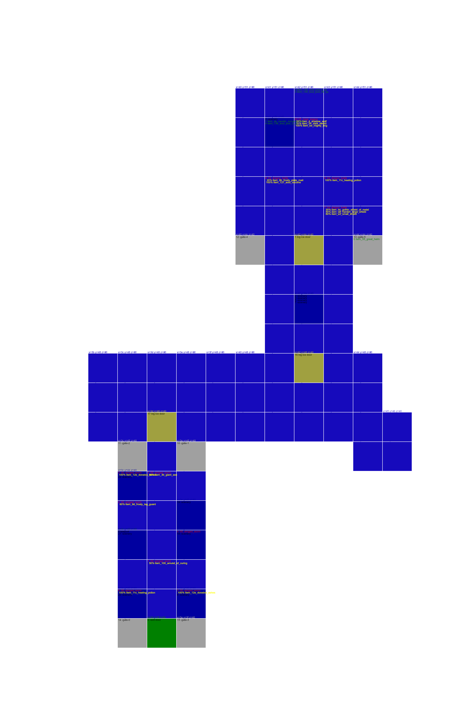
water_world_watery_labyrinth_area
Item Memory used 16
Creatures score 555
0 00_kabasaur 100% 0x30 score 563 40% item_38_axe
1 02_horned_slime 100% 0x30 score 271 50% item_11c_healing_potion
2 00_kabasaur 100% 0x30 score 563 40% item_18_bastard_sword
3 02_horned_slime 100% 0x30 score 271 50% item_11c_healing_potion
4 05_blood_brain 100% 0x30 score 264
5 05_blood_brain 100% 0x30 score 264 100% item_126_bottle_of_light
6 05_blood_brain 50% 0x30 score 264
7 05_blood_brain 50% 0x30 score 264 100% item_126_bottle_of_light
8 04_great_frog 100% 0x60 score 844 80% item_43_warrior_bow 100% item_11c_healing_potion
9 04_great_frog 100% 0x60 score 844 80% item_53_harden_full_helm 100% item_52_full_helm_of_curing
a 04_great_frog 100% 0x60 score 844 70% item_69_magical_plate_mail 100% item_11c_healing_potion
b 09_koazul 100% 0x40 score 857
c 09_koazul 100% 0x40 score 857 100% item_10a_cune
d 09_koazul 100% 0x40 score 857 100% item_4e_helm
e 09_koazul 50% 0x40 score 857 100% item_10a_cune
f 09_koazul 50% 0x40 score 857 100% item_10a_cune
10 0a_horned_slime 50% 0x30 score 271 50% item_11c_healing_potion
11 0a_horned_slime 50% 0x30 score 271 40% item_dc_caustic_ring
12 0c_gaze_hopper 100% 0x30 score 290
13 0c_gaze_hopper 100% 0x30 score 290
14 0c_gaze_hopper 100% 0x30 score 290 80% item_d3_dark_ring
15 0d_slasher 100% 0x30 score 524 40% item_95_caustic_steel_boots
16 0d_slasher 100% 0x30 score 524 100% item_11c_healing_potion
17 0e_manna_python 100% 0x30 score 614
18 0e_manna_python 100% 0x30 score 614 30% item_ca_summoner_ring_of_frost
19 0e_manna_python 100% 0x30 score 614 40% item_c9_summoner_ring_of_frost
1a 0c_gaze_hopper 100% 0x30 score 290 100% item_10a_cune
1b 0c_gaze_hopper 50% 0x30 score 290 100% item_10a_cune
1c 0d_slasher 50% 0x40 score 524 30% item_dd_caustic_priest_ring
1d 0d_slasher 50% 0x40 score 524 100% item_11c_healing_potion
1e 0d_slasher 50% 0x40 score 524 50% item_3f_battle_axe
1f 0d_slasher 50% 0x40 score 524 30% item_74_plate_mail_of_honor
4 exit-door Entrance -> water_world_sunken_river_area pos( 0 ,0 ,0)
9 exit-door Exit -> water_world_white_rain_area pos( -3 ,0 ,-3)
0 item_10a_cune
1 item_10a_cune
2 item_ab_great_shield
3 item_10a_cune
4 item_10a_cune
5 item_10a_cune
6 item_139_soul_pod_14_sp
7 item_11c_healing_potion
8 item_127_acid_vaccine
9 item_127_acid_vaccine
a item_127_acid_vaccine
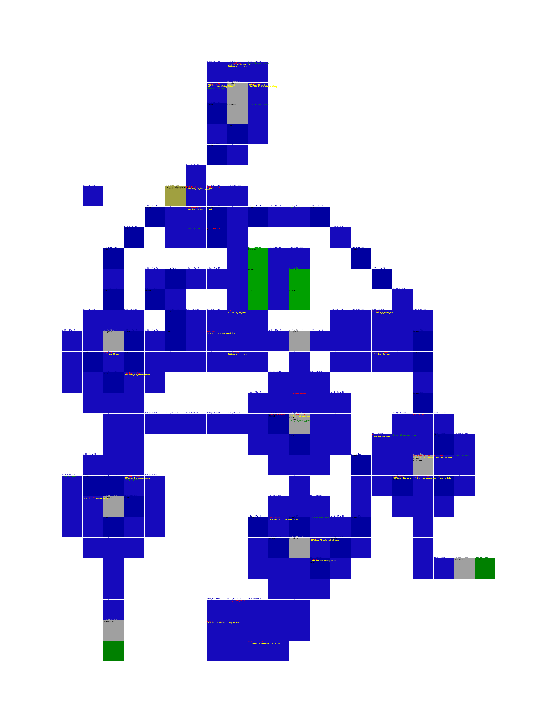
Monster World
monster_world_false_eye_area
Item Memory used 16
Creatures score 395
0 00_night_howler 100% 0x60 score 344 100% item_10a_cune
1 00_night_howler 100% 0x60 score 344 100% item_10a_cune
2 00_night_howler 100% 0x60 score 344 100% item_10a_cune
3 01_chirper 50% 0x60 score 750 100% item_125_dust_of_rage
4 04_night_howler 100% 0x60 score 344 100% item_10a_cune
5 04_night_howler 100% 0x60 score 344 100% item_10a_cune
6 04_night_howler 100% 0x60 score 344 100% item_10a_cune
7 04_night_howler 100% 0x60 score 344 100% item_10a_cune
8 04_night_howler 100% 0x60 score 344 100% item_10a_cune
9 04_night_howler 100% 0x60 score 344 100% item_10a_cune
a 05_master_howler 100% 0x60 score 474 100% item_12a_young_dragon_gem
b 09_freak 30% 0x60 score 1026 50% item_40_deadly_battle_axe
c 09_freak 30% 0x60 score 1026 50% item_28_great_sword
d 09_freak 30% 0x60 score 1026 10% item_2f_mighty_great_sword
e 09_freak 30% 0x60 score 1026 30% item_3e_living_axe
f 09_freak 30% 0x60 score 1026 100% item_124_poison_vaccine
10 08_hermit_crab 100% 0x60 score 770 100% item_e1_ring_of_dark_souls
11 0c_saurian_warrior_a 100% 0x60 score 1218
12 0c_saurian_warrior_a 100% 0x60 score 1218 40% item_87_swift_gauntlet
13 0c_saurian_warrior_a 100% 0x60 score 1218 40% item_89_arm_guard
14 0e_dinogon 100% 0x60 score 634 100% item_11f_anti_paralytic
15 0e_dinogon 100% 0x60 score 634 100% item_11f_anti_paralytic
16 0d_saurian_warrior_b 100% 0x60 score 1233
17 0d_saurian_warrior_b 100% 0x60 score 1233
18 0d_saurian_warrior_b 20% 0x40 score 1233 50% item_b7_tower_shield_of_balance
30 02_lizard_servant 100% 0x10 score 220
31 06_lizard_servant 100% 0x10 score 220
9 exit-door Entrance -> shadow_tower_part3 pos( 4 ,3 ,4)
10 exit-totem Totem -> shadow_tower_part1 pos( 38 ,5 ,38)
0 item_29_great_sword
1 item_ba_harden_gothic_shield
2 item_dd_caustic_priest_ring
3 item_136_soul_pod_5_sp
4 item_138_soul_pod_29_sp
5 item_e_shadow_tiger
6 item_11c_healing_potion

monster_world_screeching_area
Item Memory used 14
Creatures score 1170
0 04_king_hopper 5% 0x90 score 933 50% item_f8_holy_bracelet
1 04_king_hopper 5% 0x90 score 933 20% item_f9_king_bracelet
2 04_king_hopper 5% 0x90 score 933 100% item_eb_bracelet_of_curing
3 05_warden 100% 0x40 score 483 100% item_10a_cune
4 05_warden 100% 0x40 score 483 100% item_10a_cune
5 06_oblid 100% 0x50 score 973
6 06_oblid 100% 0x90 score 973 100% item_11d_magic_potion
7 06_oblid 25% 0x50 score 973
8 08_oxelus 100% 0x40 score 1550 30% item_41_keenest_battle_axe
9 08_oxelus 100% 0x40 score 1550 40% item_1d_crushing_bastard_sword
a 08_oxelus 100% 0x30 score 1550 40% item_2c_deadly_great_sword
b 0a_cursed_demon 100% 0x30 score 1043 100% item_11d_magic_potion
c 0a_cursed_demon 100% 0x30 score 1043 100% item_138_soul_pod_29_sp
d 0a_cursed_demon 50% 0x40 score 1043 10% item_c2_shinning_gothic_shield
e 0a_cursed_demon 50% 0x40 score 1043 30% item_ad_great_shield_of_balance 30% item_bd_gothic_shield_of_honor
f 0d_death_serpent 100% 0x40 score 1282 30% item_9b_harden_leg_guard 30% item_9e_leg_guard_of_protect
10 0d_death_serpent 100% 0x40 score 1282 50% item_8a_arm_guard_of_composure
11 0d_death_serpent 25% 0x40 score 1282 20% item_70_eternal_plate_mail 30% item_77_plate_mail_of_rage
21 0e_necron 100% 0x10 score 1560 100% item_e4_ring_of_dead_spirit
30 01_auriel_c 100% 0x10 score 2494
0 exit-door Entrance -> shadow_tower_part3 pos( 0 ,3 ,0)
3 exit-totem Totem -> shadow_tower_part1 pos( 10 ,6 ,10)
6 exit-totem Necron -> shadow_tower_part1 pos( 25 ,-2 ,25)
0 item_10a_cune
1 item_10a_cune
2 item_10a_cune
1c item_12a_young_dragon_gem

Illusion World
illusion_world_gloomy_domain
Item Memory used 16
Creatures score 1092
0 09_dark_fairy 100% 0x30 score 559 100% item_127_acid_vaccine
1 09_dark_fairy 50% 0x30 score 559 100% item_11e_anti_venom
2 09_dark_fairy 50% 0x30 score 559 30% item_c6_ring_of_fire_resist
3 0a_dark_bishop 50% 0x30 score 745 50% item_d5_dark_priest_ring 25% item_d0_holy_ring_of_resist
4 0a_dark_bishop 50% 0x30 score 745 40% item_d1_holy_ring_of_priest 50% item_cf_soul_ring
5 0a_dark_bishop 50% 0x30 score 745 5% item_e6_ring_of_drain
6 09_dark_fairy 50% 0x40 score 559 100% item_120_divine_symbol
7 09_dark_fairy 50% 0x40 score 559
8 09_dark_fairy 50% 0x40 score 559 100% item_120_divine_symbol
9 0c_maristella 100% 0x30 score 302 100% item_10a_cune
a 0c_maristella 100% 0x30 score 302 100% item_10a_cune
b 0d_deha 100% 0x40 score 983
c 0d_deha 50% 0x40 score 983 40% item_73_full_plate
d 0d_deha 50% 0x40 score 983 100% item_125_dust_of_rage
e 0d_deha 50% 0x40 score 983 50% item_bb_gothic_shield 100% item_b5_tower_shield_of_protect
f 0d_deha 50% 0x40 score 983 100% item_125_dust_of_rage
10 0c_maristella 50% 0x30 score 302 100% item_10a_cune
11 0c_maristella 50% 0x30 score 302
20 02_dark_imp 100% 0x20 score 896
21 00_red_puppet 100% 0x20 score 1151 30% item_103_sorcerer_amulet
22 01_dark_spirits 100% 0x20 score 1155 30% item_86_gauntlet_of_resist 100% item_11f_anti_paralytic
23 06_black_imp 100% 0x20 score 897
24 04_dark_spirits 100% 0x20 score 1151 50% item_f4_bracelet_of_composure 30% item_f5_deadly_bracelet
25 05_dark_spirits 100% 0x20 score 1155 100% item_11f_anti_paralytic
26 08_ring_demon 0% 0x30 score 692 50% item_12e_dorados_ashes
27 08_ring_demon 0% 0x30 score 692 100% item_12e_dorados_ashes
28 0d_deha 0% 0x40 score 983 60% item_56_great_helm
30 0e_blank 100% 0x20 score 103
1 exit-door Entrance -> shadow_tower_part3 pos( -4 ,2 ,-4)
3 exit-door Ladder down -> illusion_world_bewilderment_domain pos( 15 ,0 ,15)
10 exit-totem Totem -> shadow_tower_part1 pos( 37 ,-3 ,37)
2 item_125_dust_of_rage
3 item_10d_lamp
5 item_30_guardian_great_sword
6 item_106_amulet_of_recovery

illusion_world_bewilderment_domain
Item Memory used 16
Creatures score 441
0 01_gargaral 100% 0x20 score 532 100% item_10a_cune
1 02_gordoral 100% 0x20 score 539
2 02_gordoral 100% 0x20 score 539 10% item_107_star_amulet
3 01_gargaral 100% 0x20 score 532 100% item_10a_cune
4 01_gargaral 100% 0x20 score 532
5 04_demon_warrior 100% 0x30 score 595 30% item_eb_bracelet_of_curing
6 04_demon_warrior 100% 0x30 score 595 100% item_11c_healing_potion
7 05_gargaral 100% 0x20 score 532 30% item_101_amulet_of_resist
8 05_gargaral 100% 0x20 score 532 100% item_10a_cune
9 06_gordoral 100% 0x20 score 539 10% item_f9_king_bracelet
a 04_demon_warrior 100% 0x40 score 595 50% item_ec_bracelet_of_recovery
b 04_demon_warrior 100% 0x40 score 595 100% item_11c_healing_potion
c 04_demon_warrior 50% 0x40 score 595 40% item_44_bow_gun
d 04_demon_warrior 50% 0x40 score 595 20% item_17_dragon_sword
e 04_demon_warrior 50% 0x40 score 595 50% item_f1_sorcerer_bracelet 50% item_f2_priest_bracelet
f 0a_rotting_face 100% 0x80 score 340 100% item_11d_magic_potion
10 08_war_demon_1 100% 0x40 score 1033 40% item_53_harden_full_helm
11 08_war_demon_1 100% 0x40 score 1033 50% item_15_keenest_broad_sword
12 09_war_demon_2 100% 0x40 score 823
13 0e_rotting_face 100% 0x10 score 340 100% item_11d_magic_potion
14 0c_death_mage 100% 0x30 score 997
15 0c_death_mage 100% 0x60 score 997 40% item_4b_wizard_crown
16 0c_death_mage 50% 0x30 score 997 30% item_d4_dark_ring
21 08_war_demon_1 100% 0x40 score 1033 40% item_6d_shining_plate_mail 30% item_6e_dark_plate_mail
22 09_war_demon_2 100% 0x40 score 823 50% item_26_righteous_sword
30 00_gorgoral 100% 0x10 score 407 100% item_10a_cune 0% item_116_key_of_delusion
9 unknown id=78 9 5bc8 41b3c8 unknown tile( 49, 40, 4a) 49 40 4a 0 4e 0 0 4 0 fc 0 0 0 0 66 0 40 f9 66 0 af 0 1 ff
12 unknown id=76 12 5c10 41b410 unknown tile( 46, 40, 47) 46 40 47 0 4c 0 0 4 0 0 0 0 0 0 3c 0 19 f9 a9 0 3c 0 1 ff
18 exit-door Entrance -> illusion_world_gloomy_domain pos( -2 ,2 ,-2)
20 exit-door Exit -> illusion_world_worship_domain pos( -4 ,0 ,-4)
0 item_10a_cune
1 item_10a_cune
2 item_10a_cune
3 item_10a_cune
4 item_10a_cune
5 item_10a_cune
6 item_10a_cune
7 item_10a_cune
8 item_10a_cune
9 item_10a_cune
a item_10a_cune
b item_ba_harden_gothic_shield
c item_21_deadly_bastard_sword
d item_116_key_of_delusion
e item_116_key_of_delusion
f item_116_key_of_delusion
10 item_116_key_of_delusion
11 item_66_plate_mail_of_resist

illusion_world_worship_domain
Item Memory used 13
Creatures score 1011
0 00_master_knight 100% 0x40 score 963
1 00_master_knight 100% 0x40 score 963 50% item_1a_lethal_bastard_sword
2 00_master_knight 100% 0x40 score 963
3 00_master_knight 50% 0x40 score 963 50% item_20_shining_bastard_sword
4 00_master_knight 50% 0x40 score 963 50% item_1b_swift_bastard_sword 30% item_22_mighty_bastard_sword
5 06_warpoor 100% 0x30 score 426 20% item_52_full_helm_of_curing
6 06_warpoor 100% 0x30 score 426 20% item_65_harden_plate_mail
7 06_warpoor 100% 0x30 score 426 100% item_116_key_of_delusion
8 0a_warpoor 100% 0x30 score 426 30% item_c9_summoner_ring_of_frost
9 0a_warpoor 100% 0x30 score 426 50% item_11d_magic_potion
a 0a_warpoor 100% 0x30 score 426 100% item_124_poison_vaccine
b 0a_warpoor 100% 0x30 score 426 50% item_11d_magic_potion
c 0a_warpoor 100% 0x30 score 426 100% item_11c_healing_potion
d 0a_warpoor 50% 0x30 score 426 10% item_d8_ring_of_poison 20% item_dc_caustic_ring
e 0a_warpoor 30% 0x30 score 426 20% item_d7_ring_of_poison
f 0a_warpoor 30% 0x30 score 426 30% item_cc_priest_ring_of_frost
10 09_cross_breed 100% 0x30 score 665 100% item_11c_healing_potion
11 09_cross_breed 100% 0x30 score 665 100% item_124_poison_vaccine
12 09_cross_breed 100% 0x30 score 665 30% item_102_mind_amulet 40% item_105_amulet_of_balance
13 09_cross_breed 50% 0x30 score 665 20% item_103_sorcerer_amulet 100% item_126_bottle_of_light
14 09_cross_breed 50% 0x30 score 665 20% item_104_priest_amulet 100% item_120_divine_symbol
21 04_wildowess 100% 0x5 score 1865 40% item_da_sorcerer_ring_of_poison
22 01_gorthaur 100% 0x10 score 1011 50% item_e0_ring_of_ice
23 08_fester 100% 0x5 score 1445 80% item_f7_priest_bracelet
30 02_fat_mole_d 100% 0x80 score 16390
1 exit-door Entrance -> illusion_world_bewilderment_domain pos( 4 ,0 ,4)
6 exit-portal Connection -> shadow_tower_part1 pos( 13 ,15 ,13)
8 exit-portal To Boss -> shadow_tower_part1 pos( 13 ,0 ,13)
10 exit-portal Exit -> shadow_tower_part1 pos( 38 ,4 ,38)
0 item_88_deadly_gauntlet
1 item_bb_gothic_shield
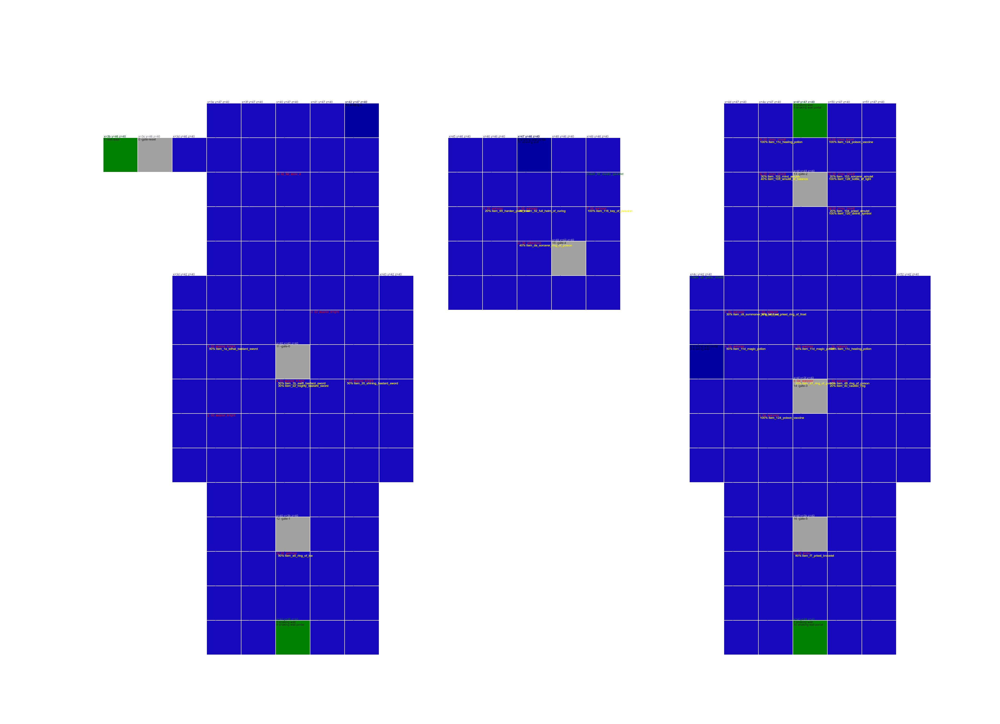
illusion_world_dream_domain
Item Memory used 6
Creatures score 1547
0 00_dark_spirits 100% 0x30 score 1549 20% item_f0_guardian_bracelet 50% item_f4_bracelet_of_composure 100% item_122_evil_eye
1 00_dark_spirits 100% 0x30 score 1549 10% item_57_harden_great_helm 30% item_56_great_helm 100% item_10e_sacred_feather
2 00_dark_spirits 100% 0x30 score 1549 10% item_45_fiery_bow_gun 100% item_128_spirit_book
20 01_disguise 100% 0x10 score 1060 60% item_108_amulet_of_winter 100% item_59_mystic_great_helm
3 exit-portal Entrance -> shadow_tower_part1 pos( 13 ,15 ,13)
4 exit-totem Totem -> illusion_world_bewilderment_domain pos( 2 ,-1 ,2)
0 item_11c_healing_potion
1 item_139_soul_pod_14_sp
2 item_138_soul_pod_29_sp
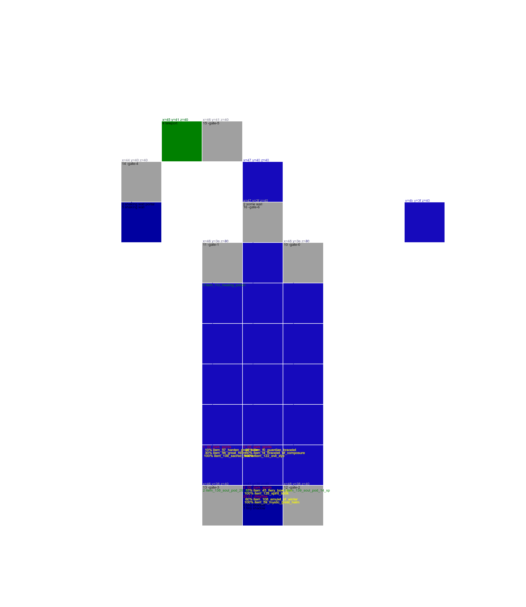
Death World
death_world_dark_castle_layer
Item Memory used 16
Creatures score 1059
0 00_hell_hunter 100% 0x30 score 1050
1 00_hell_hunter 100% 0x30 score 1050 30% item_43_warrior_bow
2 00_hell_hunter 100% 0x30 score 1050 100% item_10a_cune
3 02_karasu 50% 0x80 score 1063 20% item_107_star_amulet 100% item_128_spirit_book
4 02_karasu 50% 0x10 score 1063 30% item_f5_deadly_bracelet 100% item_128_spirit_book
5 05_armored_warrior 100% 0x30 score 1082
6 05_armored_warrior 100% 0x30 score 1082 100% item_10a_cune
7 06_armored_slayer 100% 0x30 score 1064 10% item_b8_tower_shield_of_resist 50% item_11c_healing_potion
8 06_armored_slayer 100% 0x30 score 1064 20% item_8b_deadly_arm_guard
9 06_armored_slayer 100% 0x30 score 1064 30% item_74_plate_mail_of_honor
a 06_armored_slayer 50% 0x30 score 1064 30% item_75_harden_full_plate
b 06_armored_slayer 50% 0x30 score 1064 50% item_97_steel_boots_of_balance
c 04_tree_ogre 100% 0x30 score 1362 100% item_10a_cune
d 04_tree_ogre 100% 0x30 score 1362 100% item_11c_healing_potion
e 04_tree_ogre 50% 0x30 score 1362 100% item_128_spirit_book
f 04_tree_ogre 50% 0x30 score 1362 100% item_7f_metal_glove
10 09_armored_warrior 100% 0x30 score 1082 5% item_59_mystic_great_helm
11 09_armored_warrior 100% 0x30 score 1082 50% item_11c_healing_potion
12 0a_armored_slayer 100% 0x30 score 1064
13 0a_armored_slayer 100% 0x30 score 1064 30% item_2d_keenest_great_sword
14 09_armored_warrior 50% 0x30 score 1082 30% item_2e_crushing_great_sword
15 0a_armored_slayer 50% 0x30 score 1064 50% item_af_dark_great_shield
20 08_armored_guardian 100% 0x30 score 1224 100% item_129_sealed_sword_stone
0 exit-door Prison -> death_world_undead_layer pos( 1 ,1 ,1)
2 exit-door Entrance -> shadow_tower_part3 pos( -4 ,5 ,-4)
4 exit-totem Lower totem -> shadow_tower_part1 pos( 17 ,4 ,17)
7 exit-totem Upper totem 1 -> - pos( 14,-14 ,14)
10 exit-totem Upper totem 2 -> - pos( 23 ,20 ,23)
0 item_f6_harden_bracelet
1 item_10a_cune
2 item_139_soul_pod_14_sp
3 item_10a_cune
4 item_10a_cune
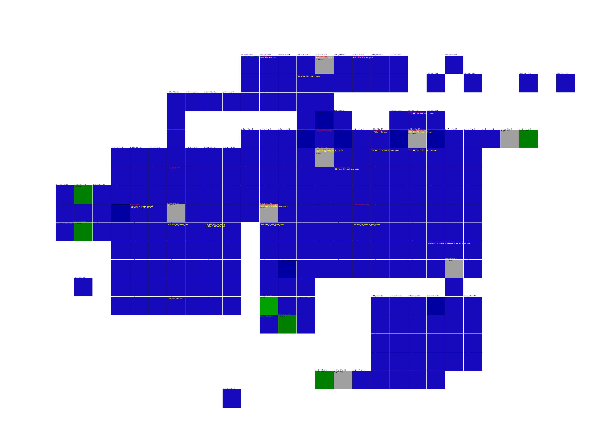
death_world_gate_of_the_dead
Item Memory used 14
Creatures score 2218
0 01_doriwi 100% 0x40 score 1358 20% item_df_ring_of_desire
1 01_doriwi 100% 0x40 score 1358 20% item_e0_ring_of_ice
2 02_bone_wolf 100% 0x40 score 1352 100% item_128_spirit_book
3 06_hell_warrior 100% 0x40 score 1594 20% item_72_holy_plate_mail
4 06_hell_warrior 100% 0x40 score 1594 20% item_b0_deadly_great_shield
5 06_hell_warrior 100% 0x40 score 1594 5% item_c3_holy_gothic_shield 20% item_c2_shinning_gothic_shield
6 05_doriwi 100% 0x40 score 1358 20% item_e1_ring_of_dark_souls
7 05_doriwi 100% 0x40 score 1358 50% item_ef_deadly_bracelet
8 05_doriwi 100% 0x40 score 1358 20% item_fa_moon_bracelet
9 05_doriwi 100% 0x40 score 1358 40% item_f0_guardian_bracelet
a 08_wyvern 100% 0x40 score 1306 50% item_10e_sacred_feather
b 08_wyvern 100% 0x40 score 1306 50% item_10e_sacred_feather
c 08_wyvern 100% 0x50 score 1306
d 0a_bone_wolf 100% 0x40 score 1352 100% item_11e_anti_venom
e 0a_bone_wolf 100% 0x40 score 1352
f 0a_bone_wolf 100% 0x40 score 1352 100% item_11e_anti_venom
10 0d_blood_bone 100% 0x60 score 826 75% item_13_broad_sword
11 0d_blood_bone 100% 0x60 score 826 30% item_31_blood_sword
12 0d_blood_bone 100% 0x60 score 826 60% item_29_great_sword
13 0d_blood_bone 100% 0x60 score 826 50% item_2a_swift_great_sword
14 0d_blood_bone 100% 0x60 score 826
20 0c_hollow_mage 100% 0x5 score 2919 80% item_109_endless_amulet
1 exit-door Entrance -> death_world_undead_layer pos( 1 ,1 ,1)
4 exit-totem Totem -> shadow_tower_part1 pos( 25,-13 ,25)
0 item_be_gothic_shield_of_balance
1 item_137_soul_pod_53_sp
2 item_136_soul_pod_5_sp
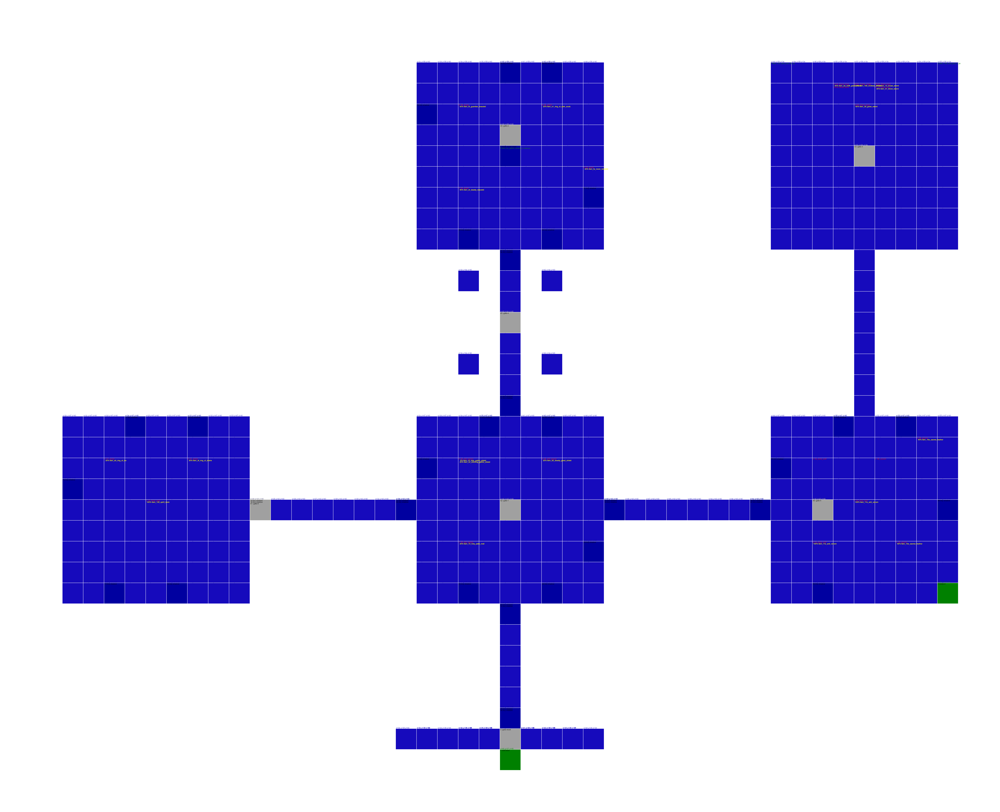
death_world_lingering_curse_layer
Item Memory used 14
Creatures score 1370
0 01_stack_eyes 100% 0x30 score 1192
1 01_stack_eyes 100% 0x30 score 1192 50% item_12e_dorados_ashes
2 01_stack_eyes 100% 0x30 score 1192 100% item_11c_healing_potion
3 01_stack_eyes 100% 0x30 score 1192 100% item_124_poison_vaccine
4 01_stack_eyes 100% 0x30 score 1192 100% item_11c_healing_potion
5 05_old_face 100% 0x40 score 1226
6 05_old_face 100% 0x40 score 1226
7 05_old_face 100% 0x40 score 1226
8 08_apocrypha 100% 0x20 score 829 10% item_e3_ring_of_seal 50% item_ca_summoner_ring_of_frost
9 09_descrypha 100% 0x20 score 706 10% item_e0_ring_of_ice 100% item_128_spirit_book
a 08_apocrypha 100% 0x20 score 829 20% item_df_ring_of_desire 40% item_cc_priest_ring_of_frost 100% item_11d_magic_potion
b 09_descrypha 100% 0x20 score 706 10% item_c8_sorcerer_ring_of_fire
c 08_apocrypha 50% 0x20 score 829 100% item_11d_magic_potion
d 09_descrypha 50% 0x20 score 706 30% item_c6_ring_of_fire_resist
e 0c_old_face 100% 0x30 score 1024 5% item_78_knight_plate_mail 40% item_73_full_plate
f 0c_old_face 100% 0x30 score 1024 15% item_76_god_plate
10 0c_old_face 100% 0x30 score 1024 10% item_5a_holy_great_helm
11 0c_old_face 100% 0x30 score 1024 10% item_8c_master_arm_guard 60% item_92_steel_boots_of_resist
12 0c_old_face 100% 0x30 score 1024 100% item_137_soul_pod_53_sp
13 0c_old_face 100% 0x30 score 1024 10% item_e5_ring_of_rage 100% item_11d_magic_potion
14 0c_old_face 100% 0x30 score 1024 30% item_da_sorcerer_ring_of_poison 50% item_11d_magic_potion
15 0c_old_face 100% 0x30 score 1024 40% item_bd_gothic_shield_of_honor
16 0c_old_face 100% 0x30 score 1024 10% item_bf_master_gothic_shield 60% item_a5_shield_of_resist
17 0c_old_face 100% 0x30 score 1024 10% item_c0_gothic_shield_of_power
22 0a_wizcrypha 100% 0x20 score 988 10% item_e6_ring_of_drain 30% item_e2_black_ring 100% item_d3_dark_ring
23 0d_bugler 100% 0x20 score 1426 100% item_11c_healing_potion
30 00_panak 100% 0x20 score 1428
31 04_blank 100% 0x20 score 192
1 exit-door Door -> shadow_tower_part3 pos( 0 ,6 ,0)
2 exit-totem Box room -> shadow_tower_part1 pos( 25,-13 ,25)
0 item_11c_healing_potion
1 item_112_key_of_knowledge
2 item_128_spirit_book
3 item_d6_dark_sorcerer_ring
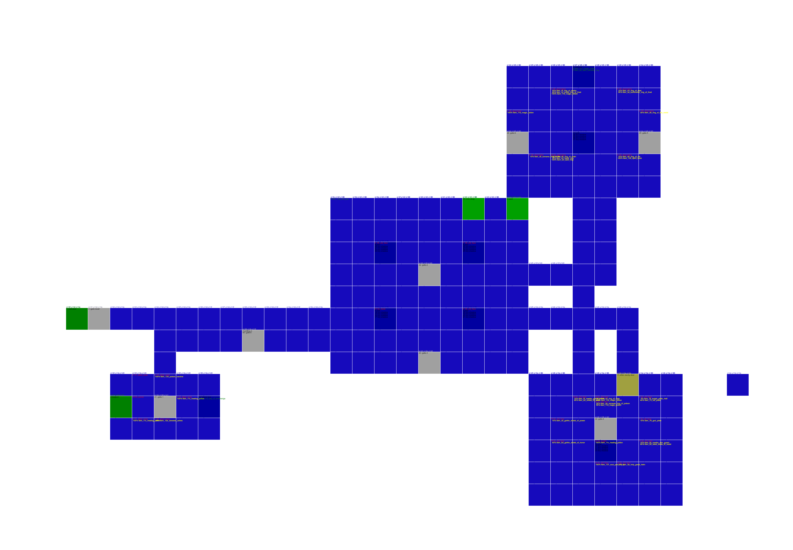
death_world_undead_layer
Item Memory used 14
Creatures score 27621
0 05_hell_hunter 100% 0x40 score 638 20% item_a0_holy_leg_guard 50% item_7f_metal_glove
1 05_hell_hunter 100% 0x40 score 638
2 05_hell_hunter 100% 0x40 score 638 100% item_120_divine_symbol
3 05_hell_hunter 100% 0x40 score 638 50% item_120_divine_symbol
4 08_claw_head 100% 0x30 score 1048
5 08_claw_head 100% 0x30 score 1048 50% item_41_keenest_battle_axe
6 08_claw_head 100% 0x30 score 1048 5% item_71_devil_plate_mail
7 0a_demons_eye 100% 0x15 score 65769
8 0a_demons_eye 100% 0x15 score 65769 50% item_11c_healing_potion
9 0a_demons_eye 100% 0x15 score 65769
a 0a_demons_eye 100% 0x15 score 65769 50% item_11d_magic_potion
b 0a_demons_eye 100% 0x15 score 65769 15% item_d2_holy_ring
c 0a_demons_eye 100% 0x15 score 65769 50% item_137_soul_pod_53_sp
d 0a_demons_eye 100% 0x15 score 65769 30% item_dd_caustic_priest_ring
e 0a_demons_eye 100% 0x15 score 65769 100% item_11d_magic_potion
f 0a_demons_eye 100% 0x15 score 65769 15% item_c8_sorcerer_ring_of_fire
10 0a_demons_eye 100% 0x15 score 65769 15% item_e2_black_ring
11 0e_claw_head 100% 0x30 score 1050 50% item_11c_healing_potion
12 0e_claw_head 100% 0x30 score 1050 50% item_10c_torch
13 0e_claw_head 100% 0x30 score 1050 100% item_10c_torch
14 0e_claw_head 100% 0x30 score 1050 100% item_11c_healing_potion
21 04_king_edward 100% 0x20 score 2271
30 01_unknown_b 100% 0x20 score 2494
31 09_pulsating_heart 100% 0x10 score 1785
32 0d_fat_mole_e 100% 0x10 score 16392
12 exit-door King's room -> death_world_gate_of_the_dead pos( 0 ,0 ,0)
15 exit-door Entrance -> death_world_dark_castle_layer pos( 10 ,-1 ,10)
0 item_10a_cune
1 item_138_soul_pod_29_sp
2 item_10a_cune
3 item_10a_cune
4 item_10a_cune
5 item_137_soul_pod_53_sp
6 item_111_kings_key
7 item_25_magical_bastard_sword
8 item_2b_fiery_great_sword
9 item_11d_magic_potion
a item_11c_healing_potion
1c item_129_sealed_sword_stone
1d item_129_sealed_sword_stone
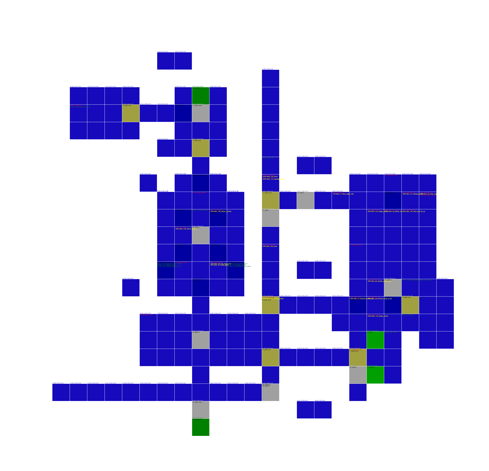
Shadow Tower
shadow_tower_part1
Item Memory used 0
Creatures score 0
0 exit-door Tower Top -> human_world_solitary_region pos( 0 ,0 ,0)
4 exit-door Edge -> human_world_cursed_region pos( 13 ,-1 ,13)
5 exit-door Top -> human_world_forgotten_region pos( -3 ,1 ,-3)
8 exit-door Middle -> human_world_forgotten_region pos( 6 ,0 ,6)
9 exit-door Bottom Edge -> earth_world_poisonous_cavern pos( -7 ,1 ,-7)
11 exit-door Bottom Middle -> earth_world_rotting_cavern pos( -7 ,0 ,-7)

shadow_tower_part2
Item Memory used 0
Creatures score 0
0 exit-door Top left -> earth_world_false_pit_cavern pos( -8 ,0 ,-8)
4 exit-door Top right -> fire_world_phoenix_cave pos( 1 ,0 ,1)
5 exit-door Edge -> fire_world_phoenix_cave pos( -5 ,0 ,-5)
7 exit-door Top Middle -> fire_world_burning_cavern pos( -4 ,0 ,-4)
9 exit-door Bottom -> water_world_impure_pool_area pos( 4 ,0 ,4)
11 unknown id=252 11 5bf8 111a3f8 unknown tile( 45, 4a, 40) 45 4a 40 0 fc 0 0 0 0 0 0 fc 0 0 cf 1 1 0 0 0 0 27 3 0

shadow_tower_part3
Item Memory used 0
Creatures score 0
0 exit-door Top right -> water_world_impure_pool_area pos( 8 ,3 ,8)
3 exit-door Top left -> water_world_sunken_river_area pos( 0 ,0 ,0)
5 exit-door Bottom middle -> monster_world_false_eye_area pos( -3 ,0 ,-3)
7 exit-door Top edge -> monster_world_screeching_area pos( 10 ,0 ,10)
9 exit-door Bottom -> illusion_world_gloomy_domain pos( -6 ,0 ,-6)
10 exit-door Fence -> death_world_lingering_curse_layer pos(-15 ,-2,-15)
13 exit-door Bottom end -> death_world_dark_castle_layer pos( 1 ,0 ,1)

Void
void